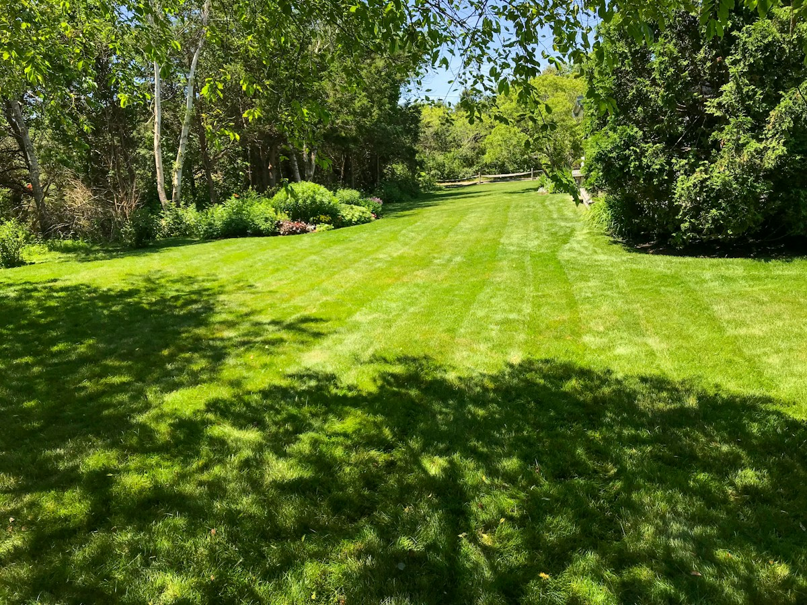
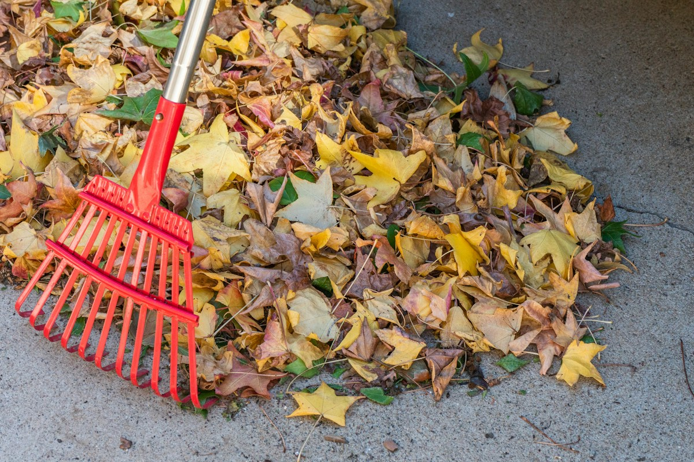
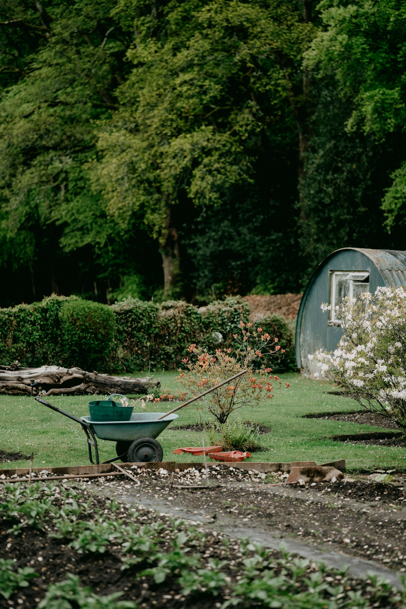

Grünflächen Pflege · Zürich 8002
Fachkundige Gartenpflege Wyss
Wir pflegen Ihre Grünflächen in Zürich.

Leistungen
Im Branchenbuch steht: Grünflächen Pflege. Die weiteren Punkte sind Vorschläge für typische Gartenpflege. Der Betrieb bestätigt sie oder streicht sie.
-
Grünflächen Pflege
Pflege Ihrer Grünflächen.
-
Rasen mähen
Regelmässig oder nach Bedarf.
Vorschlag, noch zu bestätigen -
Hecken schneiden
Formschnitt und Rückschnitt.
Vorschlag, noch zu bestätigen -
Beete pflegen
Unkraut entfernen, Beete in Ordnung halten.
Vorschlag, noch zu bestätigen -
Laubdienst im Herbst
Laub zusammenrechen und wegbringen.
Vorschlag, noch zu bestätigen


Der Betrieb
Fachkundige Gartenpflege Wyss ist ein Einzelbetrieb in Zürich. Die Tätigkeit: Grünflächen Pflege.
Ansprechperson ist Manuela Wyss. Sie erreichen den Betrieb am Telefon oder per E-Mail.
Vorschlag, noch zu bestätigen
Hier könnten ein Foto und ein paar persönliche Sätze stehen: wie der Betrieb arbeitet, welche Gärten er pflegt, was ihm wichtig ist.
Kontakt
Rufen Sie an oder schreiben Sie eine E-Mail.
Fachkundige Gartenpflege Wyss
Manuela Wyss
- Telefon
- 078 226 77 08
- manuelawyss678@hotmail.ch
- Adresse
- Rieterstrasse 55
8002 Zürich - Öffnungszeiten
- Montag bis Donnerstag
08:00 bis 18:30 Uhr